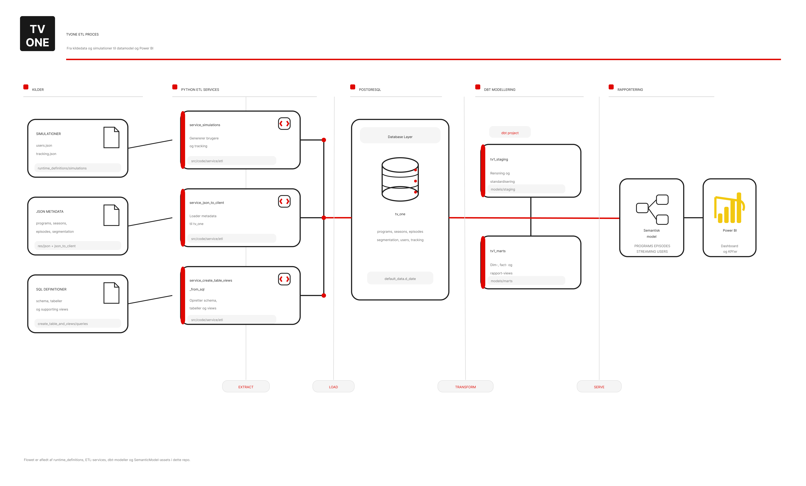

JSON-metadata og simulationer løftes ind i PostgreSQL, formes i dbt og vises i Power BI.
TVONE er bygget som en enkel, men tydelig ETL-struktur. Formålet er at gøre flowet let at følge: først indhold og simuleret aktivitet, derefter database og modellering, og til sidst semantic layer og rapport.
- Extract: JSON-filer med programmer, sæsoner, episoder og segmentering samt Python-baserede simulationer.
- Load: services indlæser data i PostgreSQL og opretter de nødvendige tabeller og views.
- Transform: dbt bygger staging- og marts-lag til rapportering.
- Serve: den semantiske model og Power BI læser de transformerede tabeller.

ETL-overblik for TVONE-casen.